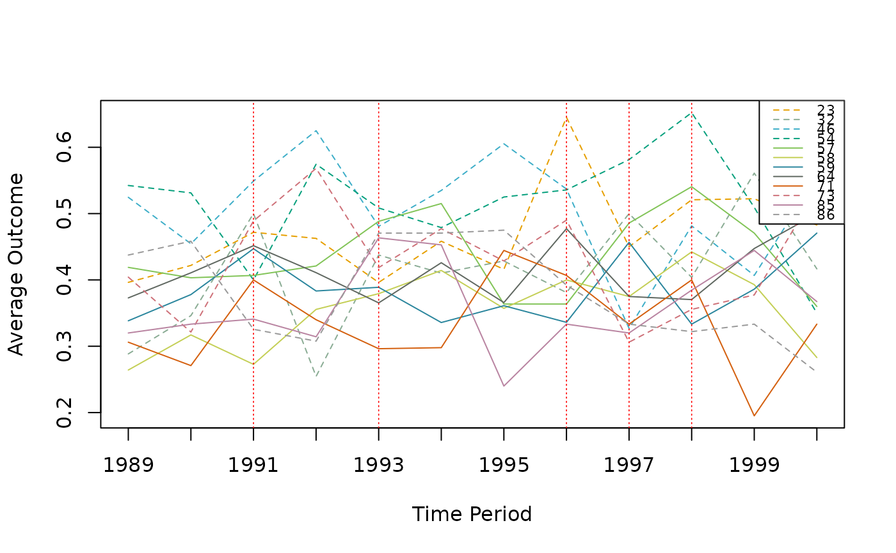
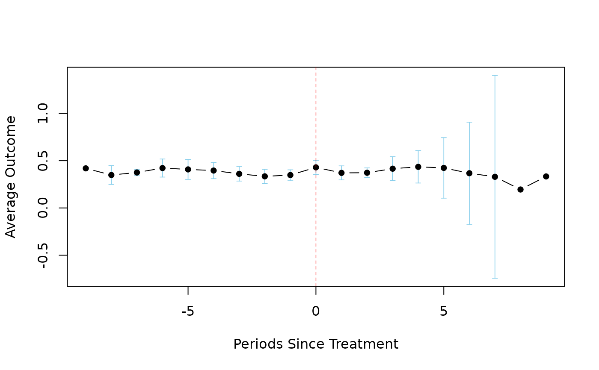

Takes in all of the filled diff df CSV files and uses them to compute group level ATTs as well as the aggregate ATT and its standard errors and p-values. Also takes in the trends data CSV files and uses them to produce parallel trends and event study plots.
Usage
undid_stage_three(
dir_path,
agg = "g",
weights = "both",
covariates = FALSE,
notyet = FALSE,
nperm = 999,
verbose = 100,
check_anon_size = FALSE,
hc = "hc3",
only = NULL,
omit = NULL,
max_attempts = 100
)Arguments
- dir_path
A character specifying the filepath to the folder containing all of the filled diff df CSV files.
- agg
A character which specifies the aggregation methodology for computing the aggregate ATT in the case of staggered adoption. Options are:
"silo","g","gt","sgt","time","none". Defaults to"g"."silo"computes a subaggregate ATT for each silo,"g"computes a subaggregate ATT for each unique treatment time,"gt"computes a subaggregate ATT for each unique treatment time & post-treatment period pair,"sgt"computes a subaggregate ATT for each treatment time & post-treatment pair, separated by silo,"time"computes subaggregate ATTs for grouped by time since treatment, and"none"does not compute any subaggregate ATTs, but rather computes an aggregate ATT directly from the differences.- weights
A string, determines which of the weighting methodologies should be used. Options are:
"none","diff","att", or"both". Defaults to the weighting choice specified in the filled diff CSV files.- covariates
A logical value (either
TRUEorFALSE) which specifies whether to use thediff_estimatecolumn or thediff_estimate_covariatescolumn from the filled diff df CSV files when computing ATTs.- notyet
A logical value which declares if the not-yet-treated differences from treated silos should be used as controls when computing relevant sub-aggregate ATTs. Defaults to
FALSE.- nperm
Number of random permutations of treatment assignment to use when calculating the randomization inference p-value. Defaults to
999.- verbose
A numeric value (or
NULL) which toggles messages showing the progress of the randomization inference once everyverboseiterations. Defaults to100.- check_anon_size
A logical value, which if
TRUEdisplays which silos enabled theanonymize_weightsargument in stage two, and their respectiveanonymize_sizevalues. Defaults toFALSE.- hc
Specify which heteroskedasticity-consistent covariance matrix estimator (HCCME) should be used. Options are
0,1,2,3, and4(or"hc0","hc1","hc2","hc3","hc4").- only
A character vector of silos to include. Defaults to
NULL.- omit
A character vector of silos to omit. Defaults to
NULL.- max_attempts
A numeric value. Sets the maximum number of attempts to find a new unique random permutations during the randomization inference procedure. Defaults to
100.
Examples
# Execute `undid_stage_three()`
dir <- system.file("extdata/staggered", package = "undidR")
# \donttest{
# Recommended: nperm >= 399 for reasonable precision
# (~15 seconds on typical hardware)
result <- undid_stage_three(dir, agg = "g", nperm = 399, verbose = NULL)
# View the summary of results
summary(result)
#>
#> Weighting: both
#> Aggregation: g
#> Not-yet-treated: FALSE
#> Covariates: none
#> HCCME: hc3
#> Period Length: 1 year
#> First Period: 1989
#> Last Period: 2000
#> Permutations: 399
#>
#> Aggregate Results:
#> ATT Std. Error p-value RI p-value Jackknife SE Jackknife p-value
#> 0.07611833 0.04999124 0.2025126 0.03007519 0.04125346 0.09208696
#>
#> Subaggregate Results:
#> Treatment Time ATT SE p-value RI p-val JK SE JK p-val Weight
#> --------------------------------------------------------------------------------------------------------------
#> 1991 0.0339 0.0272 0.2162 0.4511 NA NA 0.2428
#> 1993 0.0316 0.0257 0.2235 0.6015 NA NA 0.2305
#> 1996 0.0685 0.0400 0.0961 0.5288 NA NA 0.0910
#> 1997 0.1487 0.0333 0.0001 0.0426 0.0470 0.0090 0.3863
#> 1998 -0.0623 0.0654 0.3525 0.4812 NA NA 0.0494
# View the parallel trends plot
plot(result)

# View the event study plot
plot(result, event = TRUE)

# }